Família e idoso
- Ela mede glicemia e pressão sozinha, sem precisar ler.
- A família recebe cada medida no WhatsApp e acompanha tudo no painel.
- Na consulta, um PDF com glicemia e pressão no lugar do caderninho.
Piloto · glicemia e pressão sem caderninho
O AplicarSaúde é um app no navegador do celular feito para quem tem pouca leitura. Ela toca na gota ou no coração, fotografa o visor do aparelho, confirma cada número gigante e envia no WhatsApp. Para ela, tudo por figuras, cores e voz. Para a família, um painel que mostra tudo de longe.
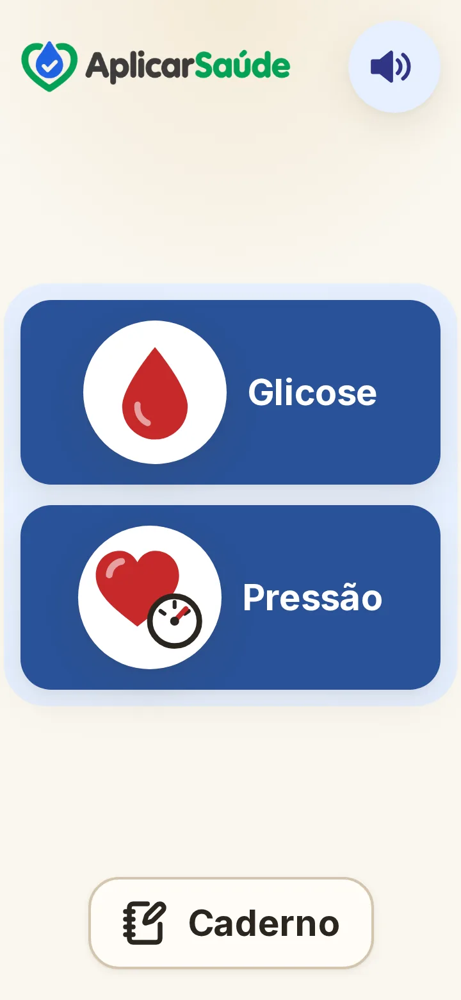
dados fictícios
O problema
Entre uma consulta e outra, o acompanhamento da glicemia e da pressão fica nas mãos da própria pessoa e da família. E as ferramentas que existem pedem o que muitos idosos não têm: leitura fácil e paciência com menus.
Anotações no caderninho somem, molham, ficam ilegíveis e quase nunca chegam inteiras à consulta.
O retorno demora ou é esquecido. Sem registro organizado, a médica decide com o que a paciente consegue lembrar.
Filhos e netos não sabem se ela mediu hoje, nem se o número estava bom. Só descobrem quando algo dá errado.
Letras pequenas, menus e senhas afastam quem tem pouca leitura ou enxerga mal. Os apps comuns não foram feitos para ela.
Como funciona
Cada tela pede uma coisa só, com figura, cor e voz. Os números vão para a família no WhatsApp e ficam guardados para a médica. Abaixo, o caminho da pressão.
A gota é a glicose. O coração é a pressão. Só dois botões na tela.
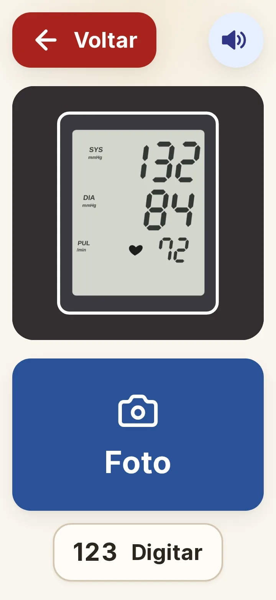
Aparelho de braço ou de pulso. A foto lê a máxima, a mínima e o pulso no próprio celular, de graça.
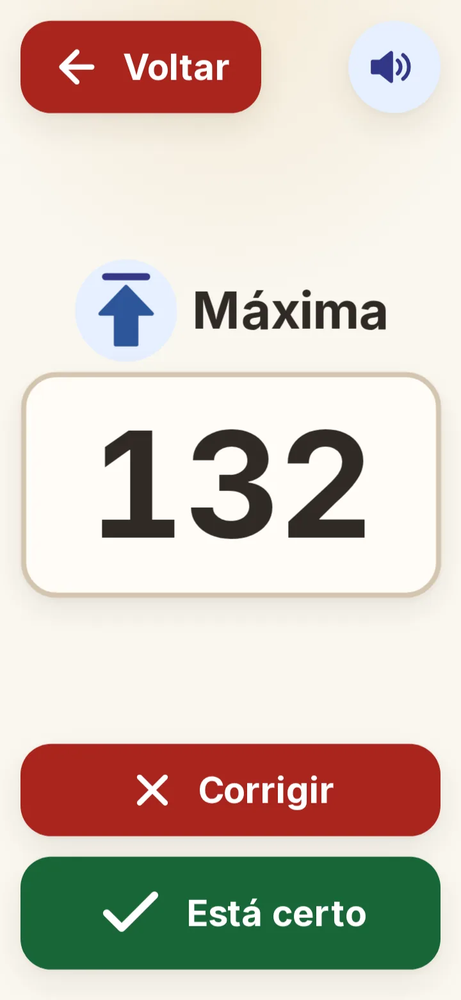
Máxima, mínima e pulso, cada um gigante. Verde se está certo; vermelho para corrigir. O pulso é opcional.
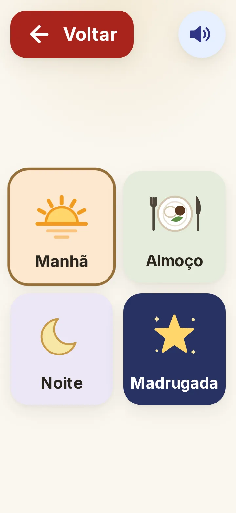
Sol, prato, lua ou estrela. Se quiser, um rostinho diz como ela está.
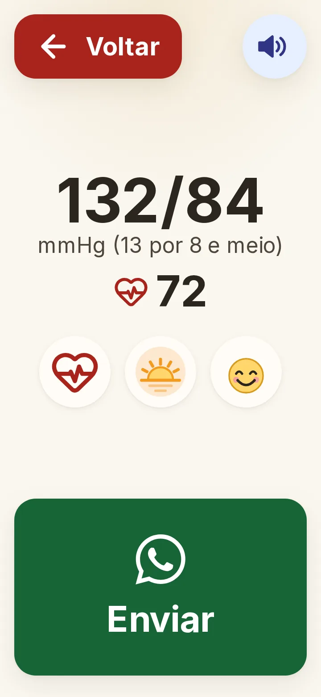
A voz fala do jeito dela: “13 por 8”. Um toque no verde e a família recebe no WhatsApp.
Telas reais do piloto com dados fictícios
Gota, foto do glicosímetro, o número gigante para conferir, o momento e o botão verde. O que já funcionava continua igual.
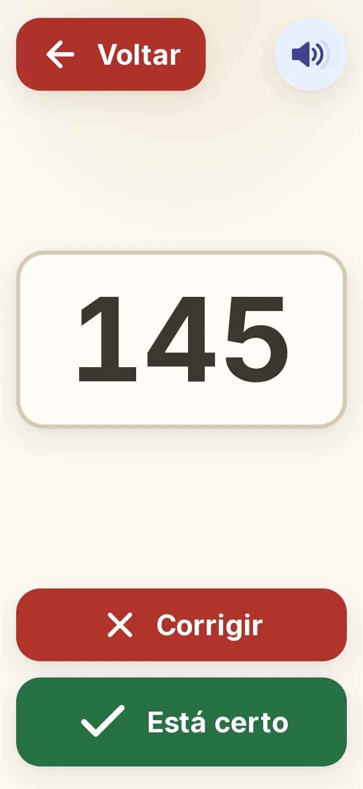
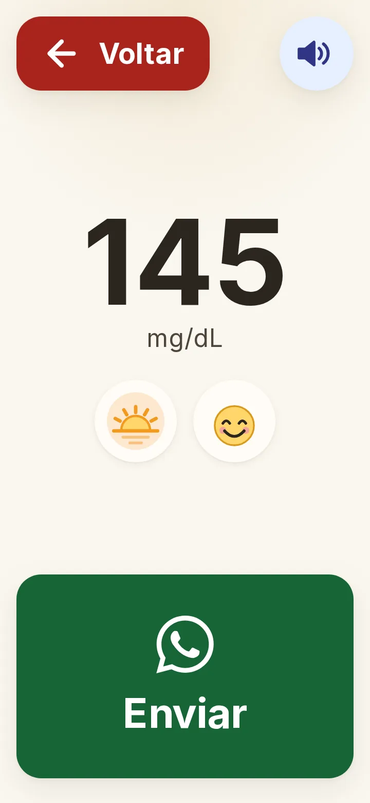
Princípio nº 1
Se ela precisar ler para usar, o app falhou. Todo o desenho parte daí.
Depois do toque
🩸 Glicemia: 112 mg/dL
☀️ Jejum
🕒 26/10 às 07:42
Como se sente: Bem07:43
❤️ Pressão: 130/80 mmHg (≈ 13 por 8)
💓 Pulso: 72
☀️ Manhã
🕒 26/10 às 07:5107:51
Ótimo, mãe! Bom dia ❤️07:58 ✓✓
O botão verde abre o WhatsApp com o número, o momento, a hora e como ela se sente. Na pressão, vão também o “13 por 8” e o pulso. Sem cadastro da família e sem API paga: é um link do próprio WhatsApp.
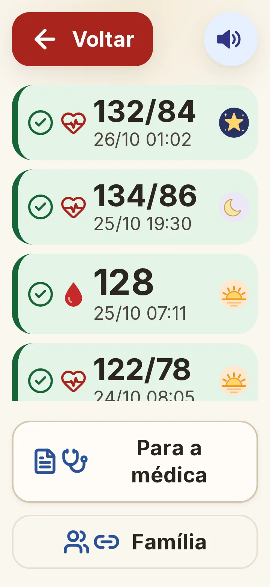
Verde é normal, amarelo pede atenção, vermelho está fora da faixa. Um toque em Para a médica gera um PDF do período, com glicemia e pressão em tabela e gráfico, para imprimir ou mostrar na consulta.
A família acompanha
No Caderno, o botão Família cria um link só de leitura e manda pelo WhatsApp. Quem recebe abre um painel no celular ou no computador, sem login e em texto normal, para quem lê bem.
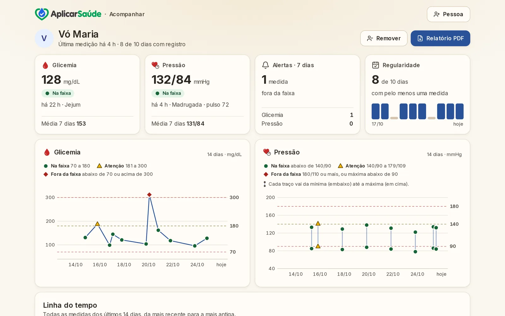
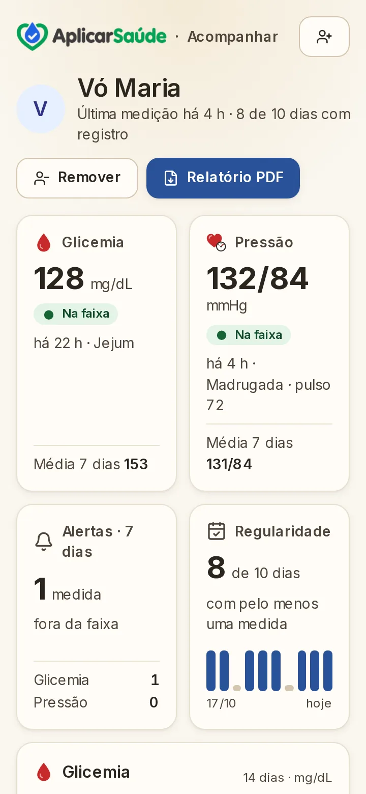
dados fictícios
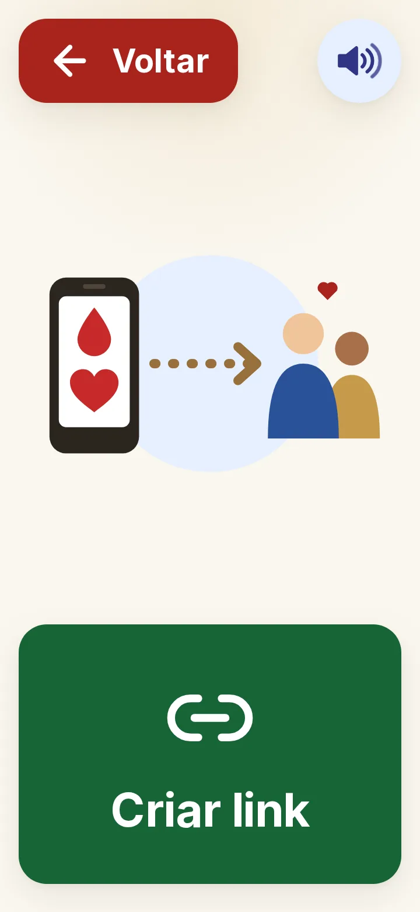
Ela pode parar quando quiser. Um toque em Parar e o link deixa de funcionar na hora.
Para quem
O cuidador registrar por vários idosos num só app ainda está no roadmap. Hoje cada celular registra uma pessoa.
Acompanhar quem vive com diabetes e hipertensão entre uma consulta e outra, com dados que chegam de casa. O piloto já registra glicemia e pressão.
O painel da UBS é o próximo passo. O desta seção é uma ilustração.
Segurança e ética
Glicemia abaixo de 70 ou acima de 300 mg/dL. Pressão muito alta (a partir de 180 de máxima ou 110 de mínima) ou muito baixa (máxima abaixo de 90). A tela mostra e fala: avise sua família, procure ajuda. A mensagem do WhatsApp já chega com o alerta.
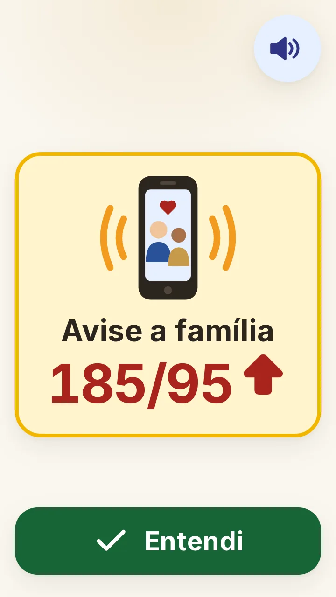
O AplicarSaúde só registra e organiza. Quem orienta o tratamento é a equipe de saúde.
A leitura da foto pode errar. Por isso ela confere cada número gigante antes de qualquer envio. A leitura foi testada com visores simulados; o próximo passo é o aparelho dela.
A chave do link vem depois do “#”, a parte do endereço que não vai ao servidor nem fica em registros. No banco fica só uma impressão digital da chave (hash), nunca o link. Ela desliga quando quiser.
Banco no Supabase com RLS (segurança por linha): cada celular é um usuário anônimo e só lê o que ele mesmo gravou.
Dado de saúde é dado pessoal sensível na LGPD (abre em nova aba). Guardamos só o necessário: números, momento, como ela se sente e hora. Sem nome, CPF, telefone ou foto. O nome no painel fica só no aparelho de quem acompanha.
A leitura dos números roda no próprio navegador e o envio usa o link do WhatsApp. Nenhuma API paga por foto ou por mensagem.
É um piloto. As faixas de cor e os avisos são provisórios e serão validados com a médica antes de qualquer uso real. Glicemia: verde de 70 a 180, amarelo de 181 a 300, vermelho abaixo de 70 ou acima de 300 mg/dL. Pressão: verde abaixo de 140/90, amarelo de 140/90 a 179/109, vermelho a partir de 180/110 ou com máxima abaixo de 90 mmHg.
Próximos passos
Glicemia e pressão por foto, WhatsApp, Caderno, PDF para a médica e painel da família.
Fotos do glicosímetro e do aparelho de pressão reais dela. Até aqui, a leitura foi testada com visores simulados.
Validar as faixas de cor e os avisos de glicemia e de pressão.
O cuidador registra por vários idosos num só app, com relatório por pessoa.
Acompanhamento de crônicos e indicadores para a equipe, com as autorizações necessárias.
Um aviso na hora de medir, com as mesmas figuras e a mesma voz.
Quer testar com a sua família, levar para a sua UBS ou para a sua equipe de cuidadores? Conte o que você precisa.
WhatsApp (47) 98880-0836 (abre em nova aba)